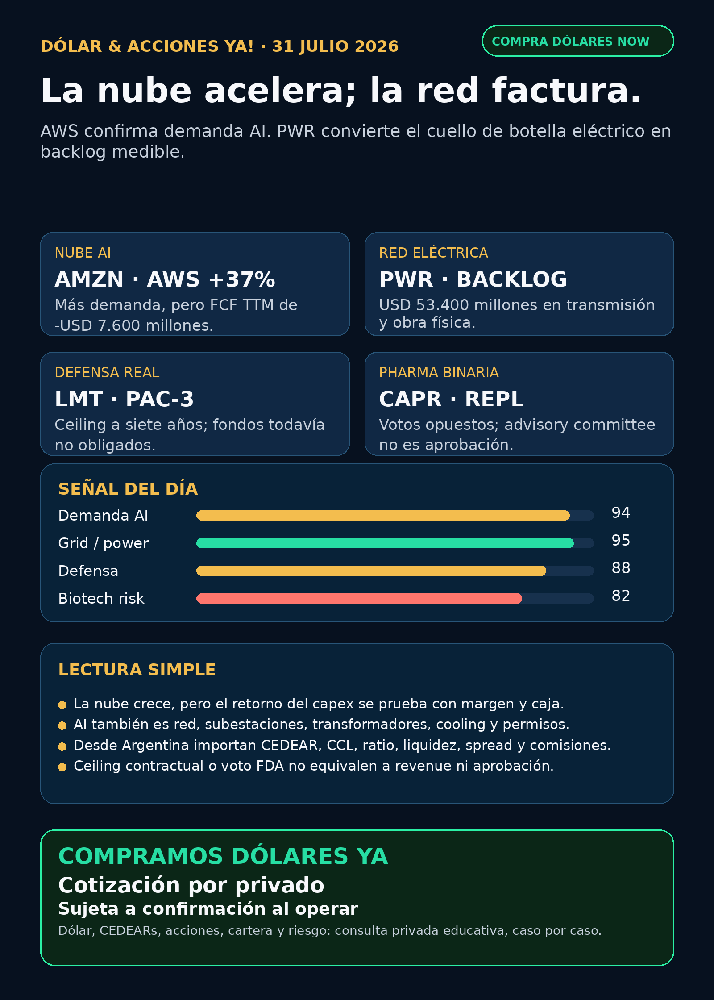

La nube acelera; la red factura.
AWS +37% con presión de caja; PWR factura el cuello de botella eléctrico y LMT deja un recibo industrial con caveat.
Texto WhatsApp
Placa del día

Dólar & Acciones YA — Stock Radar — 31/07
Fecha de edición: 2026-07-31. Research educativo para Argentina y carteras globales. No es recomendación personalizada de compra ni de venta.
Lectura simple del día
La señal del día tiene dos caras. Amazon (AMZN) confirmó que la demanda de cloud y AI sigue acelerando: AWS creció 37%. Pero el gasto en infraestructura fue tan fuerte que el flujo de caja libre de los últimos doce meses cayó a -USD 7.600 millones. En criollo: la nube vende más, pero sostener ese crecimiento exige adelantar una montaña de capital.
La segunda cara es quién factura la obra física. Quanta Services (PWR) reportó USD 33.600 millones de obligaciones de desempeño pendientes —trabajo contratado todavía no reconocido como ingreso— y USD 53.400 millones de backlog. La AI no termina en GPUs: necesita líneas, subestaciones, transmisión, interconexión, power hardware y construcción eléctrica.
Esto está ordenado por valor educativo y calidad de señal, no como ranking de compra. Buena empresa ≠ buena inversión al precio actual ≠ buen instrumento para Argentina ≠ tamaño correcto dentro de una cartera.
Capa Argentina: dólar, MEP/CCL y CEDEARs
Datos públicos tomados a las 08:46 ART:
- BlueLytics: dólar oficial vendedor ARS 1.512,00 y blue vendedor ARS 1.565,00; actualización 31/07 08:45 ART.
- CriptoYa: USDT ask ARS 1.575,00; actualización 31/07 08:45 ART.
- MEP AL30 24hs ARS 1.507,90 y CCL AL30 24hs ARS 1.544,04; ambos tienen timestamp de cierre del 30/07 16:59 ART. No son cotización intradiaria del broker.
En criollo: el MEP permite dolarizar pesos mediante bonos dentro de Argentina. El CCL conecta precios locales con el exterior y suele impactar en los CEDEARs. Un CEDEAR representa una fracción de una acción extranjera, pero tiene ratio, spread —diferencia entre mejor comprador y vendedor—, liquidez, comisiones y CCL implícito. Para mover plata real se confirma el book en IOL/PPI o broker vivo.
AMZN, AAPL y LMT son acciones globales y pueden tener instrumentos locales según el broker. PWR, CAPR, REPL, RVI y los fabricantes coreanos requieren verificación específica. Ratio, volumen y spread local no fueron revalidados; sin instrumento claro quedan como radar educativo/global, no como ejecución Argentina.
Tesis central
La nube acelera; la red factura. AWS confirma demanda final. PWR convierte el cuello de botella eléctrico en revenue, caja y backlog. La oportunidad estructural abarca chips, memoria, networking, generación, transmisión, subestaciones, transformadores, switchgear, cooling y construcción.
El riesgo es igual de real: capex no significa retorno asegurado. Amazon puede crecer en cloud y, al mismo tiempo, consumir flujo de caja. Por eso el dato importante ya no es sólo “cuánto se invierte”, sino cuánto revenue, margen y caja genera cada dólar invertido.
Señales educativas del día
1. Demanda hyperscaler y costo del capex — Amazon (AMZN)
- Qué pasó: Q2 revenue USD 200.600 millones, +20% interanual. AWS revenue USD 42.200 millones, +37%, con operating income de USD 16.600 millones frente a USD 10.200 millones un año antes.
- La otra cara: operating cash flow TTM subió a USD 161.400 millones, pero free cash flow pasó de +USD 18.200 millones a -USD 7.600 millones. El filing atribuye el deterioro principalmente a USD 66.100 millones adicionales de compras de property/equipment, sobre todo por AI.
- Calidad del resultado: net income de USD 62.600 millones incluyó USD 53.400 millones de pre-tax other income, principalmente por la inversión en Anthropic. No leer el EPS headline como operación pura.
- Fuente primaria (30/07): SEC Exhibit 99.1: https://www.sec.gov/Archives/edgar/data/1018724/000101872426000024/amzn-20260630xex991.htm
- Fuente secundaria: CNBC verificó capex Q2 de USD 54.200 millones y un plan 2026 de USD 220.000 millones: https://www.cnbc.com/2026/07/30/amazon-amzn-q2-earnings-report-2026.html
- Lectura en criollo: la demanda AI es real; el retorno sobre esa infraestructura todavía debe probarse.
- Riesgo: capital intensity, depreciación futura, memory costs, capacidad, ejecución y retorno sobre capex.
- Accionable internacional/global: acción USA
AMZN; faltan precio y valuación frescos para análisis humano. - Accionable local Argentina: CEDEAR, ratio, volumen y spread no revalidados. Estado local: no accionable por ahora.
- Estado: fortalece demanda AI / vigilar caja y retorno.
2. Red y construcción eléctrica — Quanta Services (PWR)
- Qué pasó: Q2 revenue USD 9.560 millones frente a USD 6.770 millones; net income USD 451,4 millones frente a USD 229,3 millones; EPS ajustado USD 4,24 frente a USD 2,48.
- Demanda contratada: operating cash flow USD 1.100 millones, free cash flow USD 900 millones, RPO USD 33.600 millones y backlog total USD 53.400 millones. La compañía elevó expectativas FY2026.
- Fuente primaria (30/07): SEC Exhibit 99.1: https://www.sec.gov/Archives/edgar/data/1050915/000119312526324855/d56853dex991.htm
- Lectura en criollo: RPO y backlog son trabajo comprometido, no caja inmediata, pero muestran que la inversión en grid ya se transforma en pedidos medibles.
- Riesgo: proyectos largos, permisos, labor, supply chain, working capital, integración y valuación.
- Accionable internacional/global: acción USA
PWR. - Accionable local Argentina: acceso/CEDEAR, ratio, volumen y spread no verificados.
- Estado: señal fortalecida en grid/power infrastructure.
3. Defensa industrial — Lockheed Martin (LMT)
- Qué pasó: el U.S. Army elevó a USD 58.620,8 millones el ceiling not-to-exceed del acuerdo PAC-3 MSE para FY2026–2032.
- Caveat obligatorio: no se obligaron fondos al momento del award. Es un marco para demanda y capacidad futura; no son USD 58.620,8 millones de revenue asegurado hoy.
- Fuente primaria (29/07): U.S. Army: https://www.army.mil/article/294215
- Lectura en criollo: la guerra física tiene un cuello de botella industrial concreto —mano de obra, materiales, suppliers y líneas de producción—, pero el funding se materializa por etapas.
- Riesgo: definitization, fondos anuales, cantidades, márgenes, supply chain, presupuesto y concentración gubernamental.
- Accionabilidad: USA/global directa; instrumento local no revalidado.
- Estado: fortalece tesis defensa industrial / vigilar funded backlog real.
4. Ecosistema y dispositivos — Apple (AAPL)
- Qué pasó: Q3 FY2026 revenue USD 109.400 millones, +16%; gross margin 50,1%; EPS diluido USD 2,02, +29%. iPhone, Mac y Services marcaron récords de June quarter.
- Calidad del dato: tariff refunds aportaron aproximadamente 2 puntos porcentuales al gross margin y USD 0,11 al EPS. El crecimiento existe, pero esa ayuda no es completamente repetible.
- AI: Apple mencionó el nuevo Siri AI. Eso prueba producto anunciado, no adopción, monetización o moat sostenible.
- Fuentes primarias: Apple Newsroom: https://www.apple.com/newsroom/2026/07/apple-reports-third-quarter-results/ — SEC: https://www.sec.gov/Archives/edgar/data/320193/000032019326000018/a8-kex991q3202606272026.htm
- Estado: fortalece negocio core / AI moat todavía por demostrar.
- Accionabilidad: USA/global y potencial CEDEAR; ratio, book, spread y valuación no revalidados.
5. Biotech regulatoria — Capricor (CAPR) y Replimune (REPL)
CAPR: el advisory committee votó 3-9 que la evidencia no respaldaba efectividad de deramiocel para cardiomyopathy en DMD. El análisis revisado de LVEF pasó de p=0,04 a p=0,09 y hubo un Form FDA 483. PDUFA: 22/08/2026. Fuentes SEC: https://www.sec.gov/Archives/edgar/data/1133869/000110465926088667/capr-20260729x8k.htm y https://www.sec.gov/Archives/edgar/data/1133869/000110465926087891/capr-20260729x8k.htmREPL: BioPharma Dive reportó voto 10-3 favorable sobre RP1; el sponsor reporta ORR 33,6% y duration of response mediana de 24,8 meses. El estudio central fue single-arm y el voto no obliga a FDA. Action date reportada: 02/08/2026. Sponsor SEC: https://www.sec.gov/Archives/edgar/data/1737953/000110465926088481/tm2621663d1_ex99-1.htm — secundaria: https://www.biopharmadive.com/news/replimune-rp1-fda-vote-advisory-committee-melanoma-drug/826619/- Lectura en criollo: trial data, calidad estadística, FDA staff review, advisory vote y decisión FDA son etapas distintas. Ninguna reemplaza a la siguiente.
- Estado:
CAPRdebilita tesis;REPLfortalece probabilidad de corto plazo. Ambos siguen binarios y de alto riesgo; ninguno está aprobado por estos votos.
Watchlist priorizada de hoy
Ordenada por valor educativo/señal, no como ranking de compra.
- RKLB: sin filing primario nuevo posterior al contrato Space Force ya indexado. Space/defensa vigente; sin señal nueva fuerte.
- NVDA: Amazon y
PWRfortalecen indirectamente la demanda de systems, power y red. No atribuirles revenue a NVIDIA. - PLTR: sin contrato o filing nuevo superior; valuación sigue siendo riesgo.
- TSM: sin 6-K nuevo en esta corrida; foundry moat estructural vigente.
- MU: Amazon citó memory costs como parte del mayor capex. Tesis fortalecida indirectamente, no catalyst propio.
- GOOGL/GOOG: sin filing nuevo. AWS +37% confirma demanda cloud sectorial, no métricas propias de Alphabet.
- AAPL: earnings récord con ayuda parcial de tariff refunds; core fortalecido, monetización AI pendiente.
- HOOD: Q2 récord de la corrida anterior sigue dentro de 72 horas; sin filing posterior superior. Event contracts/regulación siguen como riesgo.
- TSLA: sin primary nuevo usable sobre robotaxi/autonomy. Revisado sin señal nueva fuerte.
- ASML: EUV/High-NA moat vigente; sin filing nuevo. ASML sí / all-in no.
- Gold /
GLD/GOLD/B: metal, ETF, minera y tickerBno son equivalentes. Sin instrumento exacto no se publica precio ni accionabilidad. - RVI: sponsor sale nueva de 4.480 shares por USD 112.420,35, VWAP calculado USD 25,0938. Sin NAV, holdings, premium/descuento, volumen y spread no es oportunidad automática.
- SNDK / CBRS / AVGO: revisados sin filing nuevo superior. Storage, wafer-scale compute y custom silicon/networking conservan tesis estructural.
Energía, grid y power hardware
Generación y utilities
AMZNconfirma que la demanda de compute exige capacidad física, pero no permite asignar automáticamente su capex a un proveedor.CEG,VST,CCJ,NEE,D,GEVyCATfueron revisados; no apareció primary nuevo superior en esta ventana. Tesis estructural vigente, sin catalyst fresco para rellenar.
Grid, transformadores y equipamiento
PWR: señal fresca de mayor calidad por revenue, caja, RPO y backlog.- Carril obligatorio revisado: Hitachi Energy/Hitachi (
6501.T/HTHIY), Siemens Energy (ENR.DE, no Siemens AG),GEV, HD Hyundai Electric (267260.KS), Hyosung/HICO (298040.KS), Virginia Transformer y Delta Star. - HD Hyundai y Siemens Energy conservan señales estructurales ya indexadas; no se reciclaron como novedad del 31/07. No apareció primary 24–72 horas nuevo para el resto.
- Corea/OTC y privadas no son instrumentos fáciles para Argentina. Broker, ticker, moneda, custodia, liquidez y spread deben verificarse.
Cooling e infraestructura de data centers
VRTyMODmantienen las señales fuertes de la edición anterior: demanda real, con riesgo de supply chain y ejecución.PWRamplía la tesis desde el rack y el cooling hacia la obra eléctrica y la red.
Energía Argentina
YPF,PAMP,TGS/TGSU2,CEPUyVISTfueron revisadas. Los proyectos Vaca Muerta/RIGI ya indexados siguen estructurales, pero no apareció señal primaria nueva fuerte en 24–72 horas.- Antes de una ejecución futura: verificar acción local, ADR/CEDEAR, CCL, volumen, spread, comisiones y precio de broker vivo.
Pharma / salud
CAPR: voto 3-9 adverso, revisión estadística y Form 483. Debilita tesis; PDUFA 22/08 sigue siendo binario, no rechazo final todavía.REPL: voto 10-3 favorable reportado por secundaria fuerte; single-arm y dudas FDA permanecen. Fortalece probabilidad, no es aprobación.LLY/NVO/ GLP-1: revisados sin FDA/EMA/company primary nuevo superior. No reciclar titulares como catalyst fresco.VKTX: Phase 3 fully enrolled de la corrida anterior sigue como progreso real con burn alto; sin update primario posterior.AZN,PFE,MRK: revisados sin approval o filing nuevo mejor en esta ventana.
Radar amplio fuera de watchlist
PWR: candidato externo de mayor calidad por revenue, caja, RPO y backlog. Research de infraestructura, no orden de compra.- Defensa visible:
AVAV, GE Aerospace (GE),RTX,LMT,NOC,GD,HWM,KTOS,BA,ITA/XARrevisados. La señal fresca fuerte fueLMT; paraAVAVno apareció contrato primario nuevo superior. - Space/orbital AI:
SPCX/SpaceX, Starlink, Starship,RKLB, sat-to-mobile y orbital compute revisados sin filing material nuevo. No usarRVI/DXYZcomo proxy automático. - Autonomous mobility/physical AI: Tesla, Waymo/Alphabet, Uber, Zoox/Amazon y Joby revisados; sin evento company/regulatorio nuevo suficiente.
- Fintech/AI agents:
HOODconserva la señal Q2 anterior. Agentes de trading siguen bajo paper/read-only, ledger, límites y aprobación humana. - Crypto gobernado: sin input on-chain nuevo. Carril separado de educación, infraestructura y proxies regulados; no token trade.
Private markets e instrumentos empaquetados
RVI: fondo cerrado público USA, no operating company ni participación directa simple en sus holdings. La nueva Form 4 muestra sponsor sale de 4.480 shares por USD 112.420,35 a VWAP calculado USD 25,0938. Fuente: https://www.sec.gov/Archives/edgar/data/2085091/000178387926000116/wk-form4_1785450506.xmlDXYZ,ARKVX,AGIX,XOVR,VCX, Forge: sin filing/fact sheet/holdings nuevo suficiente. Audit-only.- Argentina vs global: estos vehículos son principalmente USA/global. Importan cuenta exterior, custodia, fiscalidad/compliance, moneda, NAV, premium, liquidez y spread; no se asume vía local.
Red flags / hype para ignorar
- “AWS +37% = retorno AI asegurado”: falso. Amazon también mostró free cash flow TTM negativo.
- “USD 58.620,8 millones de ceiling = revenue ya ganado por LMT”: falso; no hubo fondos obligados al award.
- “Advisory committee favorable = aprobación FDA”: falso. La decisión final es otra etapa.
- “Apple reportó Siri AI = moat AI probado”: falso. Faltan adopción y monetización.
- “RVI = comprar directamente SpaceX/OpenAI”: falso. Es un wrapper con NAV, holdings, premium y liquidez propios.
- “Gold / GLD / GOLD / B son lo mismo”: falso. El instrumento exacto sigue bloqueado.
Qué mirar después
AMZN: 10-Q/call, capex, AWS backlog, capacidad y retorno sobre infraestructura AI.PWR: 10-Q completo, mix orgánico/adquisiciones, working capital y exposición exacta a data centers.LMT: funded backlog, cantidades, definitization, margen y cronograma PAC-3.AAPL: normalización de tariff refunds y adopción/monetización de Siri AI.REPL: decisión FDA del 02/08 y documento oficial del advisory vote.CAPR: respuesta al Form 483 y PDUFA del 22/08.- Argentina: MEP/CCL intradiario, CEDEAR disponible, ratio, book, spread y comisiones si una tesis pasa a análisis humano.
Portfolio/base Mi Simulación
La cartera de Ricardo fue liquidada, devuelta y terminada según estado vigente del 24/06. No hay posiciones activas ni P&L real que reportar. Stock Radar queda como vigilancia para una próxima compra o un nuevo inversor.
Recibo visible de cobertura
Revisado: watchlist base, AI infra/semis, energéticas argentinas, transformadores/power hardware, cooling, pharma/GLP-1/oncology, defensa/aeroespacial, space/private wrappers, autonomía/physical AI, fintech/AI agents, crypto gobernado y mercado amplio. Los carriles sin señal primaria nueva fuerte quedaron marcados, no omitidos.
Servicio privado
Dólar · Acciones · Consulta privada. Si querés comprar o vender dólares, entender CEDEARs, armar una cartera o revisar riesgo, se ve por privado caso por caso. Cotización sujeta a confirmación al momento de operar.
Disclaimer
Esto es research educativo para decisión humana. No es asesoramiento financiero personalizado ni instrucción de compra/venta.